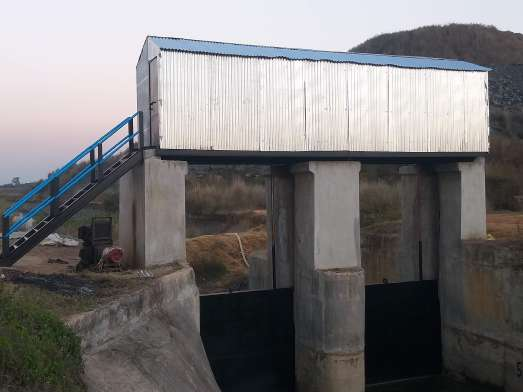
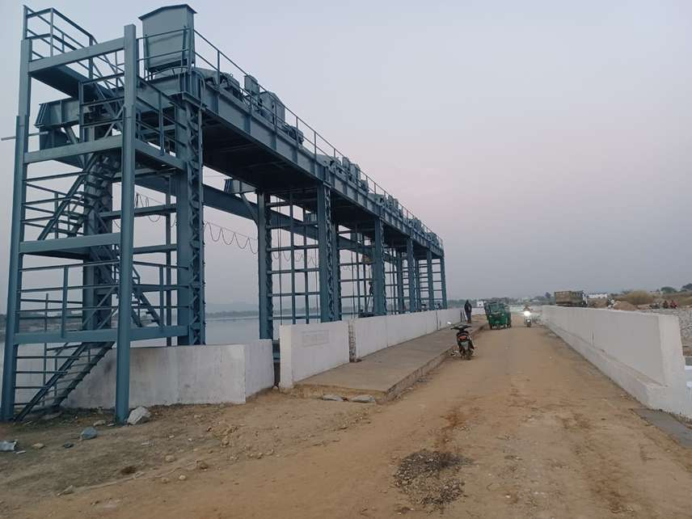
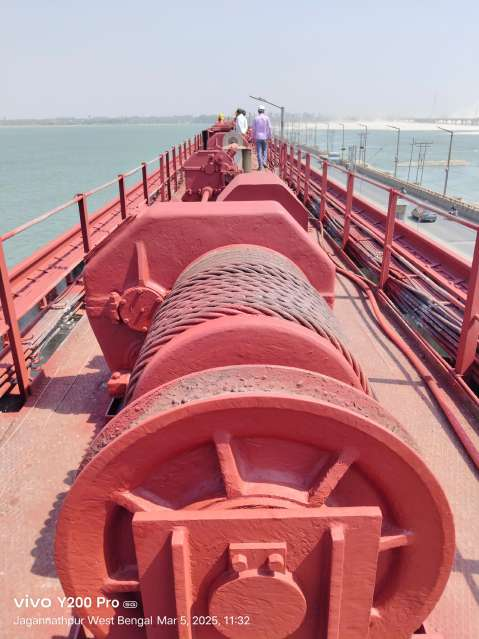
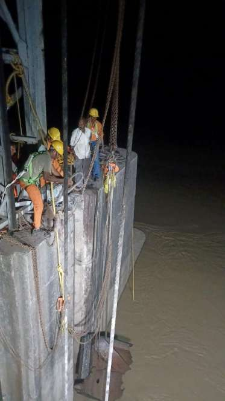
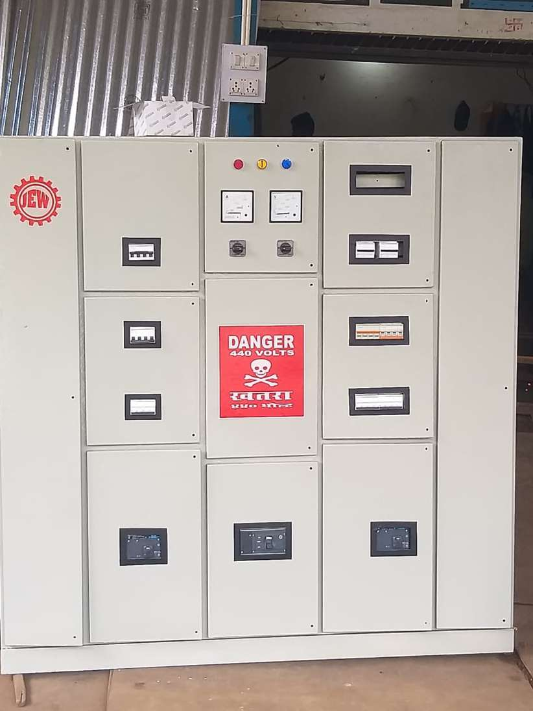
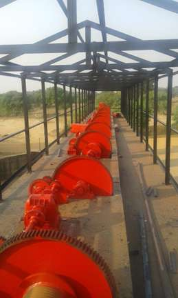
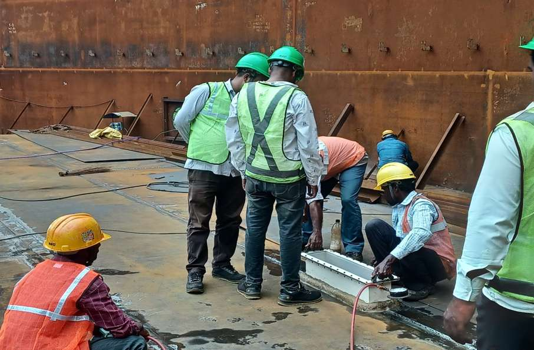
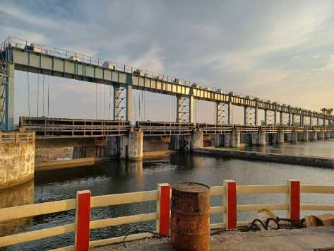
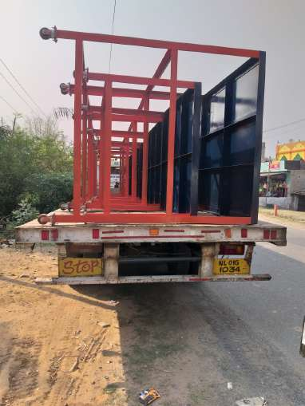
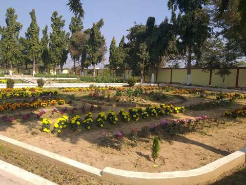

Track Record · 19 Contracts
Completed projects
Hydro-Mechanical

Galudih Barrage — Gate Maintenance & RepairGaludih, Jharkhand₹0.90 Cr contractView Case Study →
Hydro-Mechanical

Kharkai Right Main Canal — CR Gate & Hoisting ArrangementIcha Chaliyama, Jharkhand₹0.57 Cr contractView Case Study →
Repair & Painting
Ajay Barrage — Repair, Maintenance & PaintingSikatia, Deoghar, Jharkhand₹3.70 Cr contractView Case Study →
Repair & Painting
Getalsud Dam — Repair, Maintenance & PaintingGetalsud Reservoir Scheme, Ranchi, Jharkhand₹3.10 Cr contractView Case Study →
Repair & Painting

Anandapur Barrage — Gate Erection Project PaintingAnandapur, Keonjhar, Odisha₹0.49 Cr contractView Case Study →
Repair & Painting
Bindu Barrage — Spillway Gate Repair & RenovationJaldhaka, Kalimpong, West Bengal₹1.27 Cr contractView Case Study →
Repair & Painting
Farakka Barrage — Hoist Bridge & Trestle RepaintingFarakka, West Bengal₹3.45 Cr contractView Case Study →
Repair & Painting

Farakka Barrage — Stop-Log Unit Repair & PaintingFarakka, West Bengal₹0.61 Cr contractView Case Study →
Civil Works

Farakka Barrage — Emergency Stop-Log Removal, Bay 87Farakka, West Bengal₹0.68 Cr contractView Case Study →
Hydro-Mechanical
Chandil Dam — Pre-Monsoon & Monsoon Gate MaintenanceChandil, Jharkhand₹10.98 Cr contractView Case Study →
Civil Works

Chandil Dam — Gallery Electrical Panel RepairChandil, JharkhandView Case Study →
Hydro-Mechanical

Repair, Maintenance & Overhauling at GRMCJharkhandView Case Study →
Repair & Painting
Omkareshwar Dam — Radial Gate PaintingOmkareshwar Power Station, Madhya Pradesh₹0.70 Cr contractView Case Study →
Storage Tanks
Alkylate Storage Tanks — Paradip RefineryParadip Refinery, OdishaView Case Study →
Storage Tanks

Sulphur Storage Tanks — Paradip RefineryParadip Refinery, OdishaView Case Study →
Storage Tanks

DDFR / Alkylate Storage Tanks — Paradip RefineryParadip Refinery, OdishaView Case Study →
Structural Steel
Bank of Baroda, Bistupur — Sliding GateBistupur, JharkhandView Case Study →
Structural Steel

Fabrication, Erection & Supply of Movable TablesJharkhandView Case Study →
Civil Works

Galudih Barrage IB — Site Upkeep & HorticultureGaludih, JharkhandView Case Study →